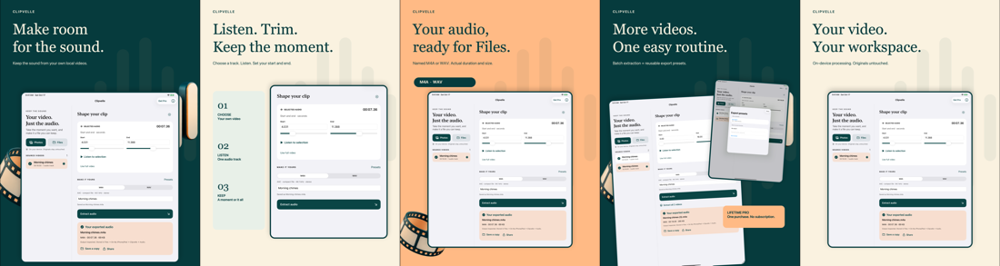

Your video.
Just the audio.
App-specific clarification sent October 19, 2026 at 18:03PDT; concrete App Review feedback is pending. The app remains Rejected under 4.3(a); Lifetime Pro is Ready for Review. No corrective resubmission is claimed.
Extract the sound from your own local videos. Listen, trim and keep a named M4A or WAV file, on iPhone and iPad.
App 1.0 (3) and Clipvelle Lifetime Pro were submitted October 17, 2026 at 9:15 PM PDT. The app version is Rejected as verified October 19, 2026. App Review recovery is in progress; no corrective resubmission is claimed. Final iPhone/iPad QA, physical trim/Save/Files checks, decoded audio, premium campaigns and published privacy are complete. Remote Sandbox purchase/restore was skipped by publisher instruction and remains unverified. Human listening remains unverified. V1 is frozen pending Apple review; not released.
Listen. Trim. Keep the sound.
Choose Photos or Files, audition one track and set your start and end. Export compact M4A or uncompressed WAV with actual duration and size. Single-video exports are free. Lifetime Pro adds batches and reusable presets with one purchase, no subscription.
A workspace for iPad

Local by design
Media processing stays on your device. Originals remain untouched. No account, ads or tracking SDK. Codec support depends on your device; protected content is unsupported.
Privacy · Support · Project showcase
©2026 Sepideh Javanbakht Dalir · arvinify.com